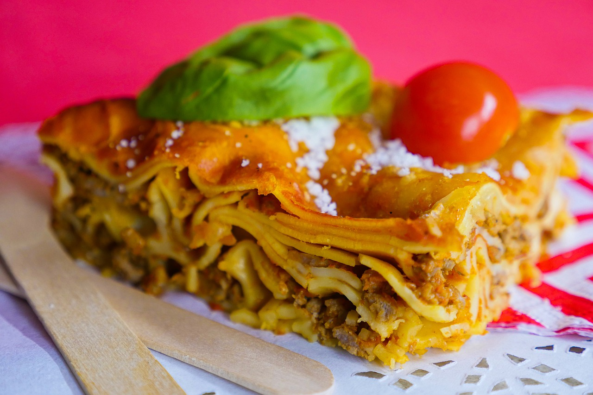

Italian Lasagna

Description
Lasagna is a wide, flat sheet of pasta. Lasagna can refer to either the type of noodle or to the typical lasagna dish which is a dish made with several layers of lasagna sheets with sauce and other ingredients, such as meats and cheese, in between the lasagna noodles.
Originally, the word lasagna was used to describe a pot in which food was being cooked rather than the pasta itself. Lasagna recipes have been around for ages, dating back to as early as the thirteenth century. Today, lasagnas come in all kinds of varieties from veggies and cream sauces to traditional sauce and cheese lasagnas as well as meat lasagnas.
Originated in Italy during the middle ages, lasagna has been attributed to the city of Naples.
Ingredients
- 9 thick slices bacon, diced
- 1 onion, chopped
- 1 teaspoon fennel seed
- 1 teaspoon dried oregano
- 1 ½ teaspoons Italian seasoning
- 2 (28 ounce) cans tomato sauce
- 2 pounds Italian sausage
- 1 (16 ounce) package lasagna noodles
- 2 pints part-skim ricotta cheese
- 2 eggs
- 2 teaspoons chopped fresh parsley
- 1 teaspoon dried oregano
- ⅓ cup milk
- 8 slices provolone cheese
- 6 cups shredded mozzarella cheese
Steps
- Brown bacon and onion in a large pan over medium heat. Stir in fennel seed, 1 teaspoon oregano, Italian seasoning, and tomato sauce. Cover, and simmer on low for 4 to 6 hours, or until thick.
- Brown sausage links in a large skillet. Drain on paper towels. Cut into 1 inch pieces.
- Mix together ricotta cheese, egg, milk, parsley, and 1 teaspoon oregano in a medium bowl.
- Layer 1 cup of sauce on the bottom of a 9 x 13 inch pan. Layer with 1/3 uncooked lasagna noodles, 1/2 ricotta cheese mixture, 1/2 sausage pieces, 1/3 mozzarella, and 1/2 provolone cheese. Top with 1/3 sauce. Repeat layers. Top with remaining 1/3 noodles. Spread remaining sauce over the top, and sprinkle with remaining 1/3 mozzarella cheese.
- Bake at 350 degrees F (175 degrees C) for 1 1/2 hours.